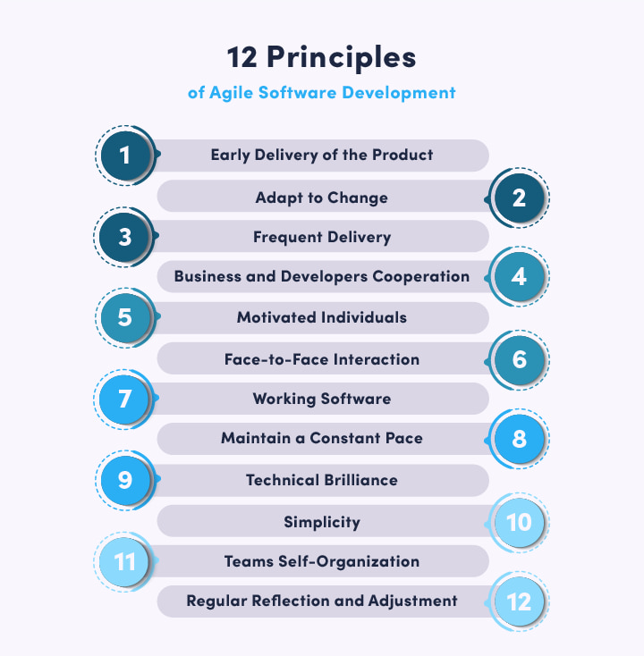
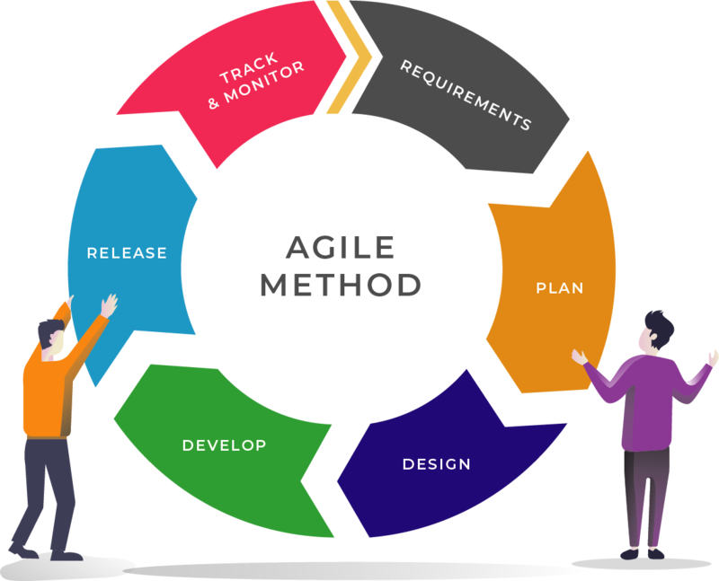

Agile methodology
Student AleksandroSN RSSchool 2021
What is Agile
Brief History
Some of the creators of the manifest

So why did Agile come about?

Basic principles of Agile
- Our highest priority is to satisfy the customer through early and continuous delivery of valuable software.
- Welcome changing requirements, even late in development. Agile processes harness change for the customer's competitive advantage.
- Deliver working software frequently, from a couple of weeks to a couple of months, with a preference to the shorter timescale.
- Business people and developers must work together daily throughout the project.
- Build projects around motivated individuals. Give them the environment and support they need, and trust them to get the job done.
- The most efficient and effective method of conveying information to and within a development team is face-to-face conversation.
- Working software is the primary measure of progress.
- Agile processes promote sustainable development. The sponsors, developers, and users should be able to maintain a constant pace indefinitely.
- Continuous attention to technical excellence and good design enhances agility.
- Simplicity--the art of maximizing the amount of work not done--is essential.
- The best architectures, requirements, and designs emerge from self-organizing teams.
- At regular intervals, the team reflects on how to become more effective, then tunes and adjusts its behavior accordingly.
If Agile is a philosophy, then Scrum is its implementation.
Agile philosophy
Cons of Agile

- Self-organizing skills are required at a very high level
- Optimistic assessments may prevail over real ones
- Lack of planning can lead to risks in bottlenecks (lack of some resource)
- The external environment can tear off the team for consulting on previous decisions (including bugs), urgent improvements, parallel projects
- The criticality of breaking the sprint (or individual parts of its improvements) is not clear, since there is no critical path for solving problems
Agile is not just principles, it is a way of life
Thanks for attention

- Useful links
- Agile manifesto
- Agile wiki
- Scrum guides